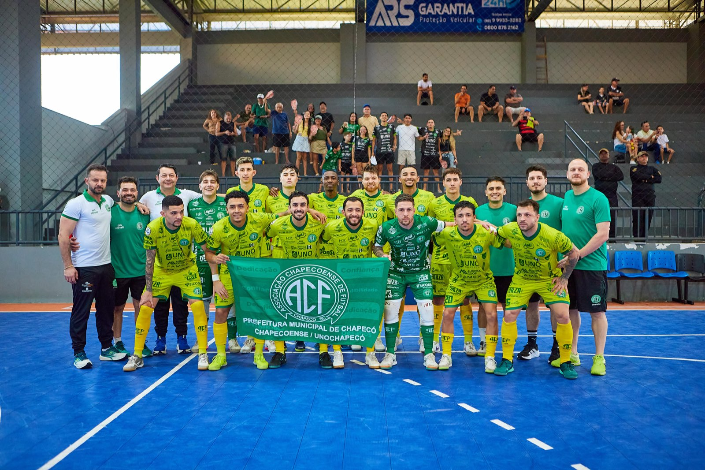
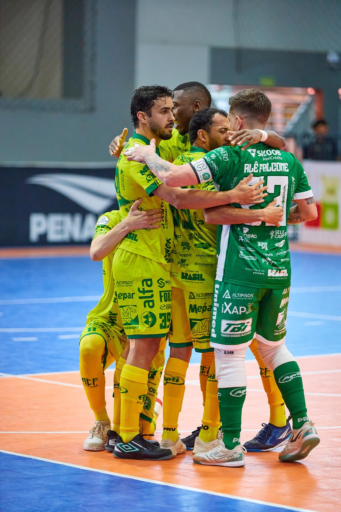
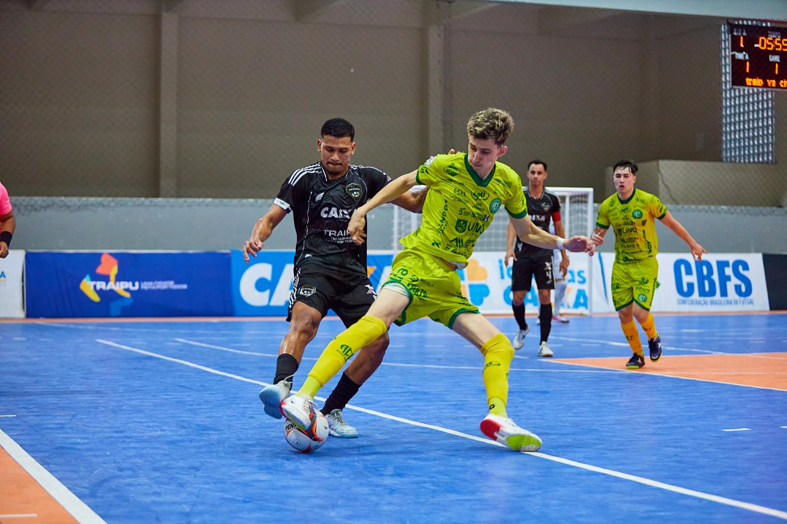

Em jogo da quinta rodada do Campeonato Brasileiro de Futsal, a Prefeitura de Chapecó/Chapecoense/Unochapecó enfrentou o Traipu, atual vice-campeão, neste sábado (22). O Verdão das Quadras acabou superado por 4 a 3, no Ginásio João Paulo II, em Arapiraca (AL). Agora, o foco se volta para o Estadual.

O time do técnico Leo Schroeder começou melhor e abriu o placar. Aos 3'15", o pivô João Seco completou para a rede. Os anfitriões cresceram na partida e buscaram a virada. Aos 5'44", Guilherme empatou e, aos 16'28", Ewerton José colocou os donos da casa em vantagem. Porém, este gol foi muito contestado pela Chape Futsal, pois as imagens não confirmam que a bola entrou na meta. Os visitantes igualaram novamente aos 17'26", com o ala Maranhão. Entretanto, os mandantes fizeram o terceiro com Thiaguinho, aos 19'15", em cobrança de pênalti.

O duelo continuou movimentado no segundo tempo. A Chapecoense empatou mais uma vez com Maranhão, aos 52 segundos, mas Ewerton José, de novo, recolocou os alagoanos na frente, aos 2'13". A equipe verde-branca partiu em busca do empate e chegou a apostar no goleiro-linha nos últimos minutos, mas não conseguiu furar a marcação do Traipu.

Com o resultado, a Chape Futsal permanece com nove pontos, atualmente em terceiro lugar do Brasileiro. O próximo desafio será já nesta quarta-feira (26), às 19h30, no Ginásio Plínio Arlindo De Nes (SER Aurora), em Chapecó, contra a ACF/Concórdia. O confronto vale pela oitava rodada da Série Ouro do Catarinense, competição liderada pela Chapecoense. A expectativa é de grande público.
Crédito das fotos: @Auditore.foto - Lucas Auditore